03-AnnotationWorkflow
Angelegt Freitag 10 August 2018
0 - Navigate to multiviewer folder
- Todo
1 - Synchronize the sequences at the front (right side)
- navigate all angles to the front.
- The front is where you can see the whole body in the frame for the frame90 angle.
- For each sequence, find the frame that aligns with the others.
- Some characteristic points are:
- the moment the foot touches the ground and rotates (initial contact)
- Some characteristic points are:
example from 001-bg-01
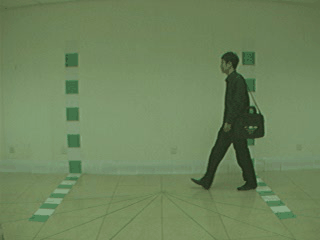
(Annotations: Frame1: in the air, frame2: on the ground, Frame3: in the air)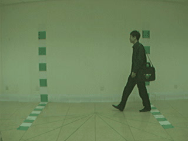
- the moment the foot lifts off the ground and moves horizontally. You can sometimes see a clear motion blur.
example from 001-bg-01
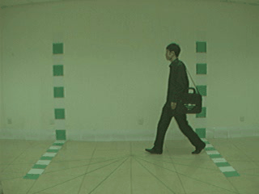
(Annotations: Frame1: on the ground, Frame2: on the ground, Frame3: in the air)
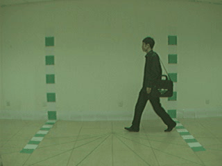
(Annotations: Frame1: on the ground, Frame2: on the ground, Frame3: in the air)
2 - Move all sequences to the back and check alignment
- Press w to navigate all angles at the same time
- Move the sequences to the back
- Now check if alignment is still given.
- check again characteristic points
- If alignment is still good, mark the sequence in the gsheet as
- end-aligned if you did not have to manually adjust the aligment
- manually aligned if you had to do manual adjustments of the aligment
- if alignment is not clear for one step, check one step before and after
- If alignment is still given for most of the steps, mark the sequence as end-aligned or manually aligned depending on what you did.
- if alignment is not given for most of the steps, drop the sequence and mark it as dropped
- Sometimes, it is only one angle that cannot be properly aligned. In that case you mark the angle with a D in the gsheet.
- If more than one angle cannot be aligned, mark all angles with D
- Update the sequence status in the gsheet
- If alignement is given, press J to save the alignment before continuing
3 - Alignment is given, start annotating
- Did you save the aligment by pressing j ? If not, press j to save the aligment
- Navigate all angles back to the front.
- Press L to start annotating the left foot.
- navigate back until the body is not entirely in the frame. Mark this as NOT_IN_FRAME by pressing N
example from 001-bg-01-30:21
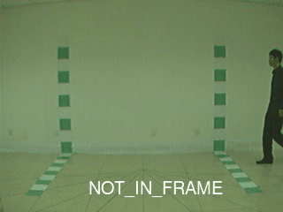
(animated gif)
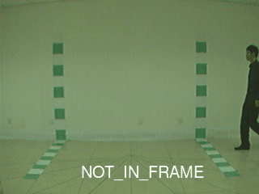
(animated gif)
The transiation is between frame 31 and 32 (very subjective here)
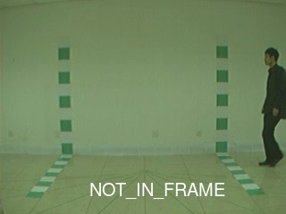 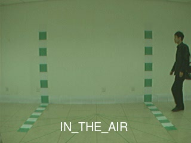
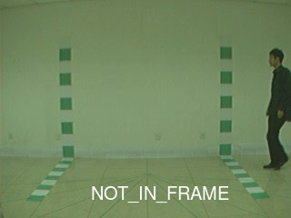 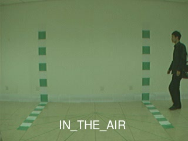
- mark the last frame with NOT_IN_FRAME (n) and the first one in frame with a for IN_THE_AIR or g for ON_THE_GROUND, depending on what is valid for the left foot
- Continue through the sequence and always mark the first and last frame of the IN_THE_AIR phase or ON_THE_GROUND phase.
- At the end of the sequence, mark last in frame and NOT_IN_FRAME (n)
example from 001-bg-01-89:93
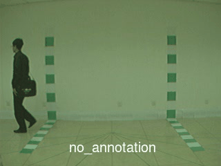
(animated gif)
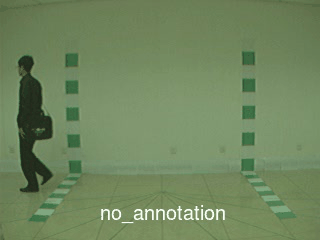
(animated gif)
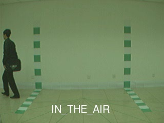 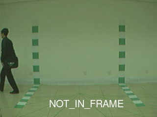
(static files)- Now Press R to switch over to the right foot
- do the same thing
- When you are done, Press c to save the annotations
4 - Did you save the alignment and the annotation?
If not, press c to save the anntations and press j to save the aligment.